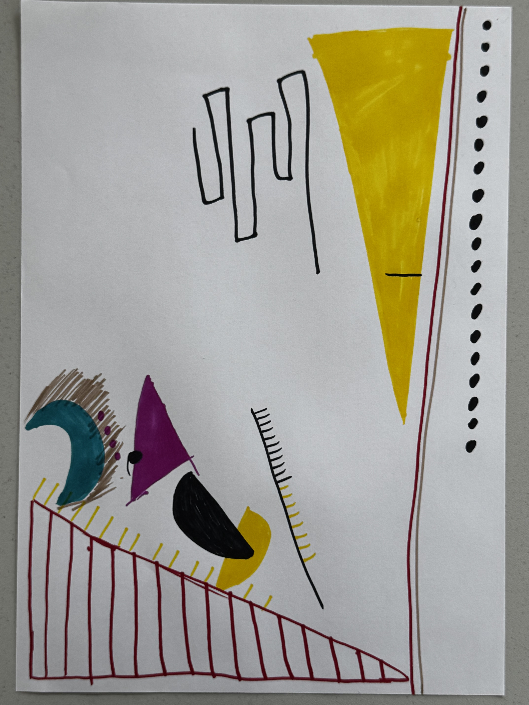

Hart's Portfolio for Introduction to Creative Computing.
This week I learned how to use the p5.js Web Editor and GitHub. At first, I tried the Copy Image Data example, but it did not work because some image files were missing. Then I changed to the Color example and it worked successfully. I also learned how to save my sketch and put the link on my GitHub portfolio. GitHub was a little difficult for me at first because I had never used it before, but now I understand the basic process better.
